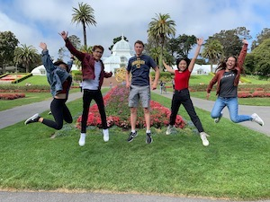
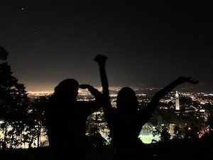
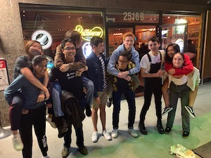
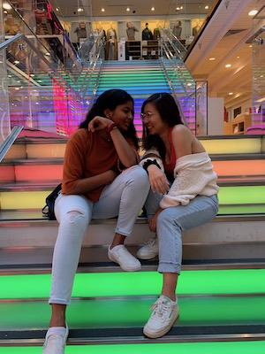
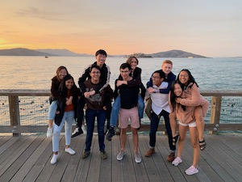
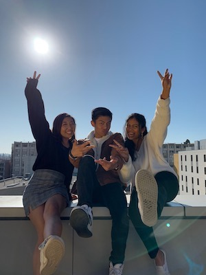
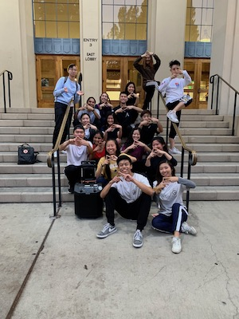
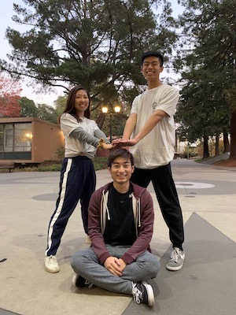
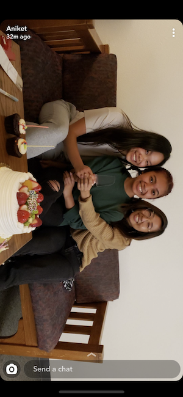

To be honest, I'm scared. I'm moving in two days and the fact that I'm leaving is really starting to set in.
I'm scared of missing home and not being able to find friends that I love. And I'm scared of being stressed and not doing well. I'm scared, because I tend to not get things right the first time, and I wonder if I'll ever be able to find what I'm passionate about.
I hope that in the end, it'll be okay. Everyone adjusts in the end. Jess said that it's important to feel scared sometimes, because when I'm in this position again, I'll know that I'll be okay. I'm growing and I guess I should be excited for that.
I feel like I have a lot of expectations for college. like studying in cafes. exploring the city. going out for late night snacks. dancing on an urban team. drinking wine in an apartment with dorky friends. taking interesting classes like astronomy or something.
and finally studying and doing things that I actually want to do.
I know that I'll be stressed and have a lot of hard times. but in those moments, mom said that it's good to go out and eat something really delicious. and I have people here that I know so I hope I'll be able to pull through.


because something is small doesn’t necessarily mean that it’s bad. i think about that a lot when it comes to things that i’ve come to enjoy a little bit. such as digital art. computer science. and choreographing.
so we’ll keep working hard.
until those small things aren’t so small anymore.



I'm writing this on my first somewhat free day in a long while. I picked up the journal and read through the entry from the days before I moved in to college.
I was worried about so much then. about making friends and adjusting well, but when I read through all the expectations I had, it's actually crazy to think that I've done all of those things that I thought only happened in movies.
I feel so lucky actually. Because I live with people I really came to love. and every night I can talk with them about anything. Having been an only child, I thought that it would be hard to live with a lot of people and I thought that I was good at being alone and doing things on my own.
But now I get lonely when they're not around, and when they go places or talk at night in the common room, I always want to be with them. I thought a lot about how much I've changed and about how humans are actually good at adjusting to change. This is my new normal now, and it makes me happy so that's more than enough.
At night, we go to the rec room and play ping pong with the frying pans or try to make smores in the shitty kitchen with the gas stove. Or we go to sf with no plans, or walk down to southside to get dessert at night. On weekends, we drink that pink moscato stuff from trader joes, and lot of days, we eat together or pile
into someone's room to work or mess around. And it makes me feel really lucky.

I taught two dance workshops at Haas Pavilion today. I don't even know how I'm still alive enough to write this right now. But Jason and I spent multiple days in esh hall and sleeping over at eachother's dorms, choreographing, cleaning, practicing teaching to Kimi. It felt so good to finally see other people dance to the choreo that we worked so hard on.
And in the end, Nush, Jason and I got a lot closer from it. Also a lot of people from Relevant came to support us, and that was really nice :)
Anusha and I had our workshop at night, and that one was a lot of fun to teach. Despite choreographing that in practically one day, I thought that it turned out pretty well, and it seemed like people liked it.
Fira came to support me for both workshops so it was really nice to see her then too! I'm also really grateful for Jason, because if he never asked me, I probably never would have tried for family time workshop, because I think I've always been kind of insecure about choreography. But I'm really really glad that I agreed to do this, because it was definitely one of the most fulfilling experiences.


after seeing those fluid-painted vinyls, i thought that i really wanted to try and make art again. i also really want to paint on my old jeans and my beat up white sneakers. or get a makers pass so i can make those wood album covers that aniket never ended up making for me lol. i wanted to paint those too.
it’s hard for me to get those things started though. but i know if i did them, i’d really like it. and i think i’d be really proud of myself for doing that. and right now, i really need something to be proud of myself for.
and then maybe if i do those things more, then next time, it’ll be easier to start again.
